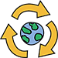
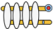
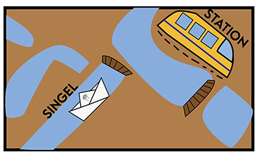

New! New! New!
- 
- 
De nieuwe Poezenboot gaat voor meer duurzaamheid, meer en betere isolatie. Maar ook voor meer eigen energieopwekking door het gebruik van zonnepanelen. Ook zal de nieuwe boot ervoor zorgen dat de katten nooit te warm of te koud zullen krijgen en natuurlijk veel ramen dus meer natuurlijk licht zodat de 'toe beans' lekker kunnen roosteren.
Locatie
Je kan De Poezenboot bezoeken tussen 13 - 15u, behalve op maandag, woensdag of zondag. Mits je een reservatie hebt. Als je zeker bent dat je wil adopteren kunnen ze een ander moment voor je regelen. Adres: Singel 38 G 1015 AB Amsterdam
